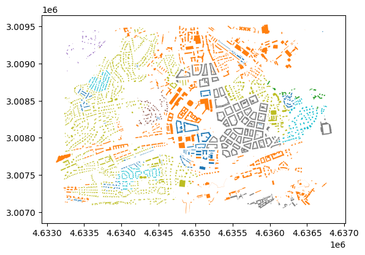

import json
import numpy as np
from scipy.cluster.hierarchy import fcluster
from scipy.cluster.hierarchy import dendrogram
import pandas as pd
import geopandas as gpd
import matplotlib.pyplot as pltGuide
This notebook contains the basic overview how to interact with the data product. See the overview of its structure in Data.
Required dependencies
A list of Python packages required to run this notebook:
numpypandasscipygeopandasmatplotlibpyarrow
Set the path to the files. This assumes a local copy of the data product but note that Zenodo allows direct access to cloud optimized files like these. Just geopandas.read_parquet currently does not support reading from HTTPS.
data_product_dir = './data_product'Plotting building data
The results from the clustering are assigned to buildings and are stored in {NUTS1}.parquet. The data has the following columns:
geometry- the geometry of the building.morphotope_id- the morphotope, the building falls into.initially_noise- whether the morphotope and the building were initially noise and assigned to a cluster later.level_1_label- the level 1 classiffication of the building, corresponding to a cut of the hierarchy of 2500.level_2_label- the level 2 classiffication of the building, corresponding to a cut of the hierarchy of 1600.level_3_label- the level 3 classiffication of the building, corresponding to a cut of the hierarchy of 1000.level_4_label- the level 4 classiffication of the building, corresponding to a cut of the hierarchy of 700.level_5_label- the level 5 classiffication of the building, corresponding to a cut of the hierarchy of 500.level_6_label- the level 6 classiffication of the building, corresponding to a cut of the hierarchy of 300.level_7_label- the level 7 classiffication of the building, corresponding to a cut of the hierarchy of 200.
You can quickly search the file using the bounding boxes in the EPSG:3035 projection.
%%time
buildings_subset = gpd.read_parquet(f'{data_product_dir}/cz0.parquet', bbox=(4633248, 3007112, 4636735, 3009478))CPU times: user 749 ms, sys: 485 ms, total: 1.23 s
Wall time: 407 msThis read a portion of the data from the CZ0 NUTS1 region (Czechia).
buildings_subset.head(2)| geometry | morphotope_id | initially_noise | level_1_label | level_2_label | level_3_label | level_4_label | level_5_label | level_6_label | level_7_label | |
|---|---|---|---|---|---|---|---|---|---|---|
| 69333_174961 | POLYGON ((4633241.84 3007139.255, 4633252.999 ... | 69333_849_709 | False | 1 | 1 | 1 | 1 | 2 | 4 | 6 |
| 69333_174926 | POLYGON ((4633264.399 3007127.003, 4633266.132... | 69333_849_709 | False | 1 | 1 | 1 | 1 | 2 | 4 | 6 |
See how it looks like on a map, using the first bifurcation of the taxonomy.
buildings_subset.plot(column='level_1_label', categorical=True)Plotting morphotope delineation
The results from the morphotope delineation are stored in {NUTS1}_morphotopes.parquet. The data has the following columns: - geometry - the geometry of the building. - morphotope_id - the morphotope, the building falls into. - initially_noise - whether the morphotope and the building were initially noise and assigned to a cluster later. - level_1_label - the level 1 classiffication of the building, corresponding to a cut of the hierarchy of 2500. - level_2_label - the level 2 classiffication of the building, corresponding to a cut of the hierarchy of 1600. - level_3_label - the level 3 classiffication of the building, corresponding to a cut of the hierarchy of 1000. - level_4_label - the level 4 classiffication of the building, corresponding to a cut of the hierarchy of 700. - level_5_label - the level 5 classiffication of the building, corresponding to a cut of the hierarchy of 500. - level_6_label - the level 6 classiffication of the building, corresponding to a cut of the hierarchy of 300. - level_7_label - the level 7 classiffication of the building, corresponding to a cut of the hierarchy of 200.
You can quickly search the file using the bounding boxes in the EPSG:3035 projection.
%%time
morphotope_subset = gpd.read_parquet(f'{data_product_dir}/cz0_morphotopes.parquet', bbox=(4633248, 3007112, 4636735, 3009478))CPU times: user 1.09 s, sys: 298 ms, total: 1.39 s
Wall time: 1.29 sThis read the same spatial portion of Czech data.
morphotope_subset.head(2)| geometry | morphotope_id | initially_noise | level_1_label | level_2_label | level_3_label | level_4_label | level_5_label | level_6_label | level_7_label | |
|---|---|---|---|---|---|---|---|---|---|---|
| 2690 | MULTIPOLYGON (((4632562.899 3007004.802, 46325... | 69333_849_709 | False | 1 | 1 | 1 | 1 | 2 | 4 | 6 |
| 4461 | MULTIPOLYGON (((4633261.396 3007177.453, 46332... | 69333_849_-1621 | True | 2 | 4 | 8 | 17 | 24 | 55 | 101 |
These align with the labels allocated to buildings.
ax = morphotope_subset.plot(column='level_6_label', categorical=True, alpha=.5)
buildings_subset.plot(column='level_6_label', categorical=True, ax=ax)Data
The data product also contains the building-level morphometric attributes. The Parquet files are linkable via index and shall be aligned.
Building-level data
data = pd.read_parquet(f"{data_product_dir}/cz0_data.parquet")
data.head(2)| sdbAre | sdbPer | sdbCoA | ssbCCo | ssbCor | ssbSqu | ssbERI | ssbElo | ssbCCM | ssbCCD | ... | mibElo | mibERI | mibCCo | mibLAL | mibFR | mibSCo | micBAD | licBAD | misBAD | midBAD | |
|---|---|---|---|---|---|---|---|---|---|---|---|---|---|---|---|---|---|---|---|---|---|
| 51289_956483 | 124.380966 | 45.522812 | 0.0 | 0.513258 | 5.0 | 18.040710 | 1.012931 | 0.596085 | 7.803086 | 1.393862 | ... | 0.356651 | 1.002488 | 0.404339 | 27.314951 | 3.396414 | 3.396414 | 48.194645 | 42.634842 | 167.245316 | 122.123451 |
| 51289_956636 | 11.252568 | 17.124670 | 0.0 | 0.272640 | 3.0 | 30.028931 | 0.855039 | 0.428266 | 3.320516 | 0.805084 | ... | 0.356651 | 1.002488 | 0.404339 | 27.314951 | 3.396414 | 3.396414 | 79.993858 | 42.634842 | 167.245316 | 122.123451 |
2 rows × 76 columns
When joining the data, you can easily visualise it.
joined = buildings_subset.join(data, how='left')
joined.plot('mtbSWR')Morphotope-level data
For each non-noise morphotope, we release aggregated morphometric values for a direct comparison.
morphotope_data = pd.read_parquet(f'{data_product_dir}/morphotope_data.parquet')
morphotope_data.head(2)| sdbAre | sdbPer | sdbCoA | ssbCCo | ssbSqu | ssbERI | ssbElo | libNCo | ldbPWL | ltcBuA | ... | mibElo | mibERI | mibCCo | mibLAL | mibFR | mibSCo | micBAD | midBAD | limLPS | limAre | |
|---|---|---|---|---|---|---|---|---|---|---|---|---|---|---|---|---|---|---|---|---|---|
| 4_0_1 | 0.987137 | 1.433775 | -0.003262 | -1.949620 | -0.424706 | 0.483494 | -2.019151 | -0.08234 | 0.208525 | 0.081287 | ... | -1.315770 | 0.462303 | -0.613538 | 0.493512 | 1.521773 | 1.521773 | 3.654263 | 4.850005 | 0.149898 | 3.887056 |
| 4_0_10 | 0.999498 | 1.196410 | -0.003262 | -0.789406 | -0.342916 | 0.486163 | -1.535531 | -0.08234 | 0.182541 | -0.233554 | ... | -0.153381 | 0.395069 | 0.056334 | 0.486932 | 1.216988 | 1.216988 | 1.178967 | 1.099998 | 0.149898 | 0.893068 |
2 rows × 58 columns
This is joinable to morphotope geometry based on index of data and a morphotope_id. The same can be used to join the data to buildings.
Taxonomic tree
The data for the taxonomic tree - ward_linkage_10.npy - is in scipy.cluster.hierarchical.linkage format.
The input data for the taxonomy is a subset of morphotopes and their characteristics. Only extreme outliers were dropped from the full morphotope list when producing the taxonomy.
linkage_matrix = np.load(f'{data_product_dir}ward_linkage.npy')Since the linkage matrix is large - around 500,000 observations - we do not plot labels
fig,ax = plt.subplots(figsize=(10,10))
_ = dendrogram(linkage_matrix,ax=ax, no_labels=True)You can use fcluster to cut it at arbitrary values.
cutoffs = [1000, 1600, 2500]
cluster_frame = []
for c in cutoffs:
clusters = fcluster(linkage_matrix, t=c, criterion='distance')
cluster_frame.append(pd.Series(clusters))
cluster_frame = pd.concat(cluster_frame, axis=1)
cluster_frame.columns = cutoffs
cluster_frame.index = morphotope_data.index
cluster_frame| 1000 | 1600 | 2500 | |
|---|---|---|---|
| 4_0_1 | 1 | 1 | 1 |
| 4_0_10 | 1 | 1 | 1 |
| 4_0_100 | 7 | 4 | 2 |
| 4_0_101 | 7 | 4 | 2 |
| 4_0_102 | 1 | 1 | 1 |
| ... | ... | ... | ... |
| 152511_809_0 | 4 | 2 | 1 |
| 152511_8_0 | 3 | 2 | 1 |
| 152511_8_1 | 5 | 2 | 1 |
| 152511_8_2 | 5 | 2 | 1 |
| 152511_901_0 | 4 | 2 | 1 |
519259 rows × 3 columns
Linking the new cuts to the buildings
You have to link back the cluster to the buildings to plot using the morphotope ID. Some buildings are not part of morphotopes, or are part of outlier morphotopes. They come out as NA in the mapping, and they have to be handled seperately.
new_clusters = buildings_subset.morphotope_id.map(cluster_frame[1000].to_dict())buildings_subset.plot(column=new_clusters.fillna(-1), categorical=True)
In this case we are mapping the morphotopes to a cut that exists, so we can verify the results
from pandas.testing import assert_series_equal
# drop outliers and noise and compare only morphotopes that are part of the clustering
new_assignment = new_clusters.dropna().astype(int)
old_assignment = buildings_subset.loc[~buildings_subset.initially_noise, 'level_3_label']
assert_series_equal(new_assignment, old_assignment, check_names=False)Handling noise and outliers
The easiest way to deal with outliers is to use the buildings.parquet file, the initially noise column and the lowest level to the custom cut.
mapping_level = 'level_7_label'Create a dictionary that maps the old assignemnts at the specified level to the new cluster values.
new_assignment_mapping = new_assignment.drop_duplicates()
new_assignment_mapping = pd.Series(new_assignment_mapping.values, buildings_subset.loc[new_assignment_mapping.index, mapping_level])
new_assignment_mappinglevel_7_label
6 1
77 7
102 8
73 6
18 2
47 5
40 4
dtype: int64new_noise = new_clusters[new_clusters.isna()].index
new_clusters.loc[new_noise] = buildings_subset.loc[new_noise, mapping_level].map(new_assignment_mapping)buildings_subset.plot(column=new_clusters, categorical=True)Naming clusters & branches
The data product also contains full names and pen portraits of the first three levels of taxonomy.
with open(f"{data_product_dir}/label_name.json", 'r') as f:
cluster_names = json.load(f)cluster_names{'1': {'1': 'Incoherent Fabric', '2': 'Coherent Fabric'},
'2': {'1': 'Incoherent Large-Scale Fabric',
'2': 'Incoherent Small-Scale Fabric',
'3': 'Coherent Interconnected Fabric',
'4': 'Coherent Dense Fabric'},
'3': {'1': 'Incoherent Large-Scale Homogeneous Fabric',
'2': 'Incoherent Large-Scale Heterogeneous Fabric',
'3': 'Incoherent Small-Scale Linear Fabric',
'4': 'Incoherent Small-Scale Sparse Fabric',
'5': 'Incoherent Small-Scale Compact Fabric',
'6': 'Coherent Interconnected Fabric',
'7': 'Coherent Dense Disjoint Fabric',
'8': 'Coherent Dense Adjacent Fabric'}}First level keys capture the level of labels, second level the mapping of a label to a name.
with open(f"{data_product_dir}/pen_portraits.json", 'r') as f:
cluster_descriptions = json.load(f)cluster_descriptions{'1': {'Incoherent Fabric': 'Incoherent fabric covers a wide morphological variety, with a common theme of partial or complete breakage of the traditional structural roles of streets, plots, and buildings. Common for modernist period, post-modern, and industrial developments, this branch has less typically less connected street networks and may showcase buildings facing open spaces and internal parts of blocks rather than streets. At the same time, it contains less defined village developments.',
'Coherent Fabric': 'In coherent fabric, all streets, plots, and buildings take their traditional structural roles in defining the spatial arrangement of the urban form. It is common for traditional European development with densely connected street networks and legible plot structure, facilitating direct relation between buildings and streets.'},
'2': {'Incoherent Large-Scale Fabric': 'Incoherent large-scale fabric captures typically urban development composed of buildings larger than the average, that may or may not be far from each other, creating large open spaces. Streets tend to be of an utilitarian use, rather than a structural one, typical for modernist housing estates or industrial zones.',
'Incoherent Small-Scale Fabric': 'Incoherent small-scale fabric is mostly non-urban development capturing various kinds of villages and small towns, which show high variation of morphological properties. Buildings tend to be smaller, but distances between them vary, as well as the relations between buildings and streets.',
'Coherent Interconnected Fabric': 'Coherent interconnected fabric is typical for historical city and town centres, where buildings form intensive development. In this branch, the built-up density and local street connectivity are high, while inter-building distances remain relatively small. Buildings frequently share walls, forming larger structures with courtyards along relatively short and narrow streets.',
'Coherent Dense Fabric': 'Coherent dense fabric captures morphology typical for urban residential areas with lower density, where blocks are defined by streets more than buildings. The street networks are well defined and connected with buildings being either adjacent (e.g. row houses) or disjoint (e.g. urban villas).'},
'3': {'Incoherent Large-Scale Homogeneous Fabric': 'Incoherent large-scale homogeneous fabric consists of the large buildings with moderate variations in size and shape, as well as low to moderate street connectivity and wide streets. The resulting environment is spacious, with significant open areas between structures, typical of modernist housing, with areas showing a relatively high degree of homogeneity caused by underlying planning principles.',
'Incoherent Large-Scale Heterogeneous Fabric': 'Incoherent large-scale heterogeneous fabric consists of the largest buildings with notable variations in size and shape, as well as low to moderate street connectivity and wide streets. The design does not emphasise sunlight exposure, creating broad but less refined configurations, typical of industrial and other service areas.',
'Incoherent Small-Scale Linear Fabric': 'Incoherent small-scale linear fabric has a moderate built-up area and low local street connectivity, typically forming long linear villages. Its streets are long, linear, wide, and there are minimal shared walls between structures.',
'Incoherent Small-Scale Sparse Fabric': 'Incoherent small-scale sparse fabric is characterised by low built-up density, low street connectivity, large distances between buildings, few shared walls, and large open spaces around buildings. The streets are few, open, and wide. The buildings are small to moderate in size, and their layout is more typical of rural areas.',
'Incoherent Small-Scale Compact Fabric': 'Incoherent small-scale compact fabric has low to moderate built-up area and street connectivity. Buildings exhibit a consistent alignment among themselves and also along streets of varying length, width, and linearity. There is also a significant number of shared walls between structures, typical for more traditional villages.',
'Coherent Interconnected Fabric': 'Coherent interconnected fabric is typical for historical city and town centres, where buildings form intensive development. In this branch, the built-up density and local street connectivity are high, while inter-building distances remain relatively small. Buildings frequently share walls, forming larger structures with courtyards along relatively short and narrow streets.',
'Coherent Dense Disjoint Fabric': 'The coherent dense disjoint fabric has moderate to high built-up density and local street connectivity, with longer and wider streets compared to other dense developments. Shared walls between buildings are less common, and distances within buildings are moderate, reflecting a pattern of standalone structures within a robust street network.',
'Coherent Dense Adjacent Fabric': 'In coherent dense adjacent fabric, the built-up density and local street connectivity are high, while inter-building distances remain relatively small. Buildings frequently share walls, forming larger structures along relatively short and narrow streets.'}}